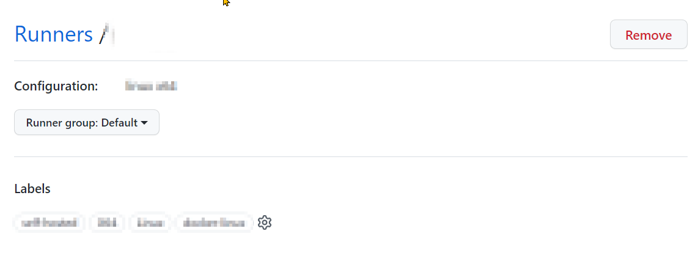
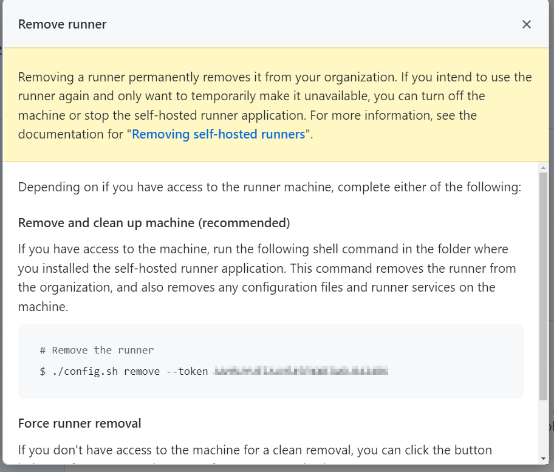

Adding more Github Self-Hosted Runners
January 18, 2022 - 2 mins read time - 310 words - garrardkitchen
Adding more GitHub Self-Hosted Runners
To help build out our numbers of GitHub Self-Hosted Runner, we took a shortcut and had cloned an existing Linux VM.
Unfortunately, the by-product of doing this resulted in (a) the clonee (source) Linux VM had their Self-Hosted hijacked by the new VM and (b) we had a Runner registered in GitHub that didn’t actually have a running runner - Offline 🤪.
Madness!
Ok, so what to do?…
These are the steps I worked thru to rectify this:
- Firstly, remove Runner off of the new VM
- Next, rerun the
config.shstep on new VM - Finally, restart to Runner service on Clonee VM
First, let’s deal with the New VM
First of all, we need to remove the correct Runner service so I ran:
sudo systemctl | grep runner
...
sudo systemctl | grep runner
actions.runner.<org>.<hostname>.service loaded active
I then copied the above service (actions.runner.<org>.<hostname>.service) name into clipboard and past in below (<service-name>)
systemctl stop <service-name>
systemctl disable <service-name>
Next, I returned to the GitHub portal and navigated to the Runners page and selected the new Runner. What I’m aiming to do here is to get a token that I can use to remove the Runner from the new VM:

I pressed the Remove button

then copied and executed this on the new VM:
./config.sh remove --token <redacted>
I re-ran the config.sh by:
./config.sh --url https://github.com/<org> --token <redacted>
sudo ./svc.sh install
sudo ./svc.sh start
At this point I saw the Self-Hosted Runner return to the GitHub Runners page - Showing as Idle and not as Offline.
Bring the Clonee back online
At this point, I could now longer see the Clonee’s hostname in the list of Runners.
I returned to the Clonee VM and ran:
cd actions-runners
sudo ./svc.sh start
This restarts the Runner as a service. It then became visible in the GitHub Runners page.